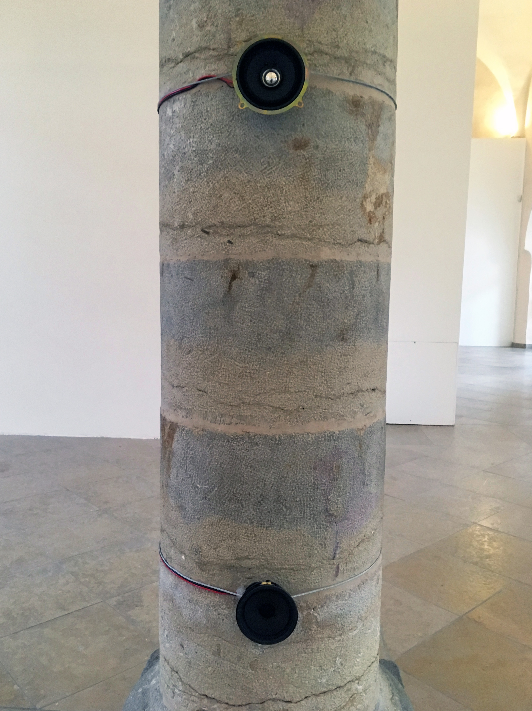
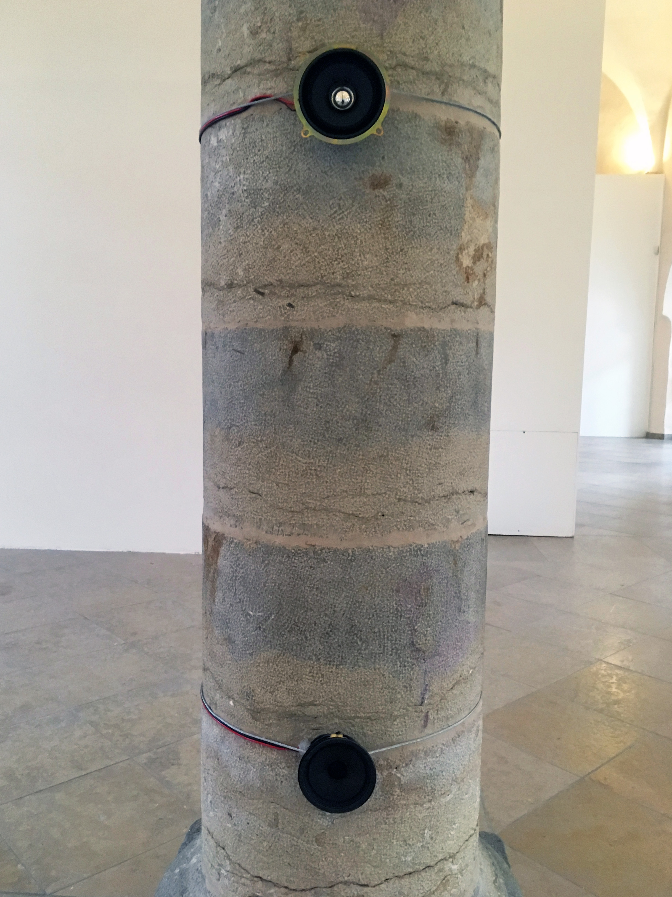
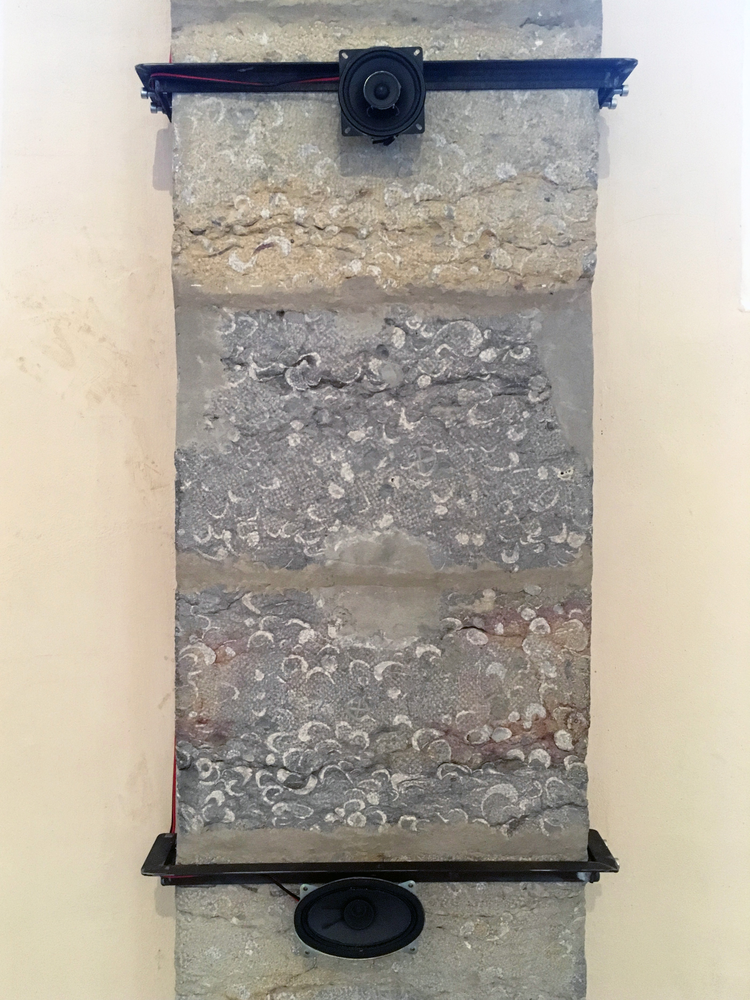
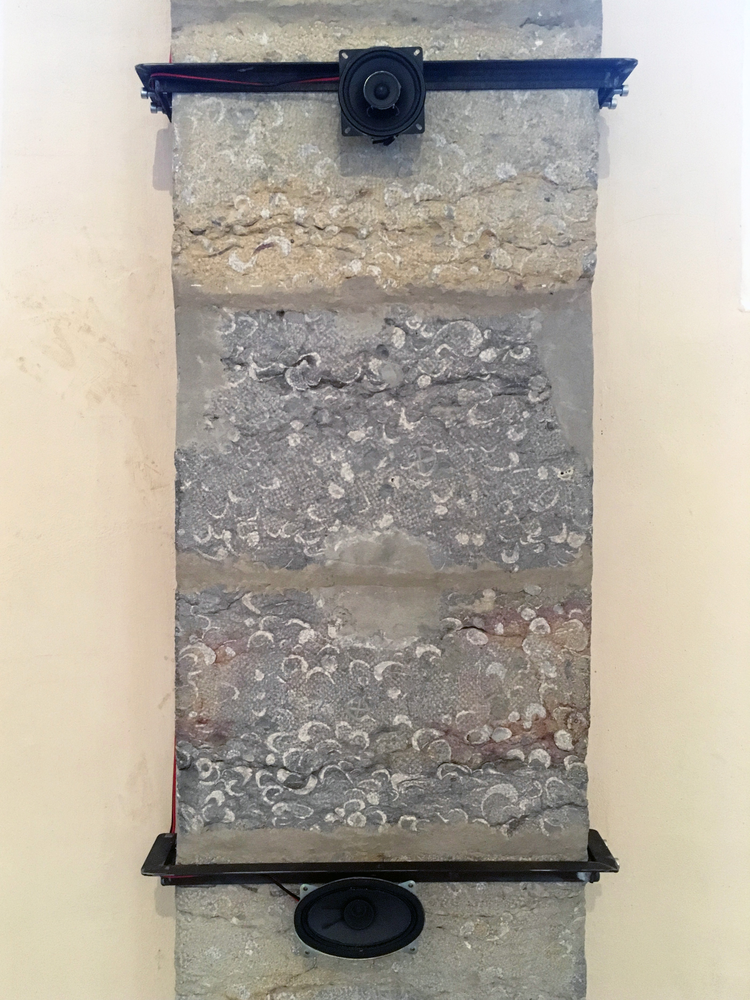
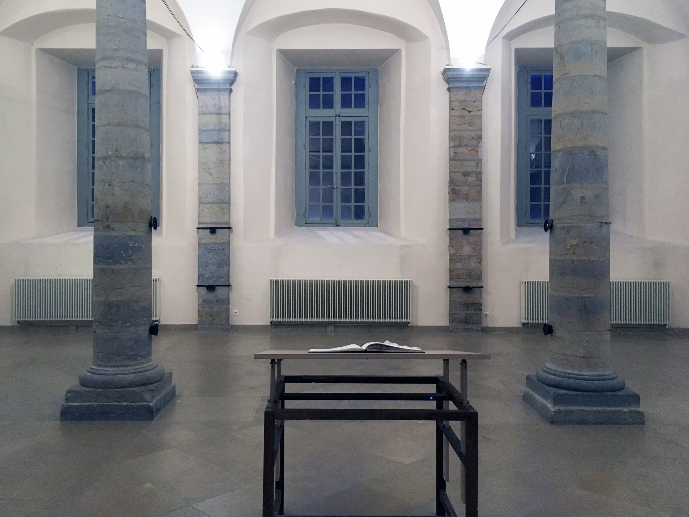
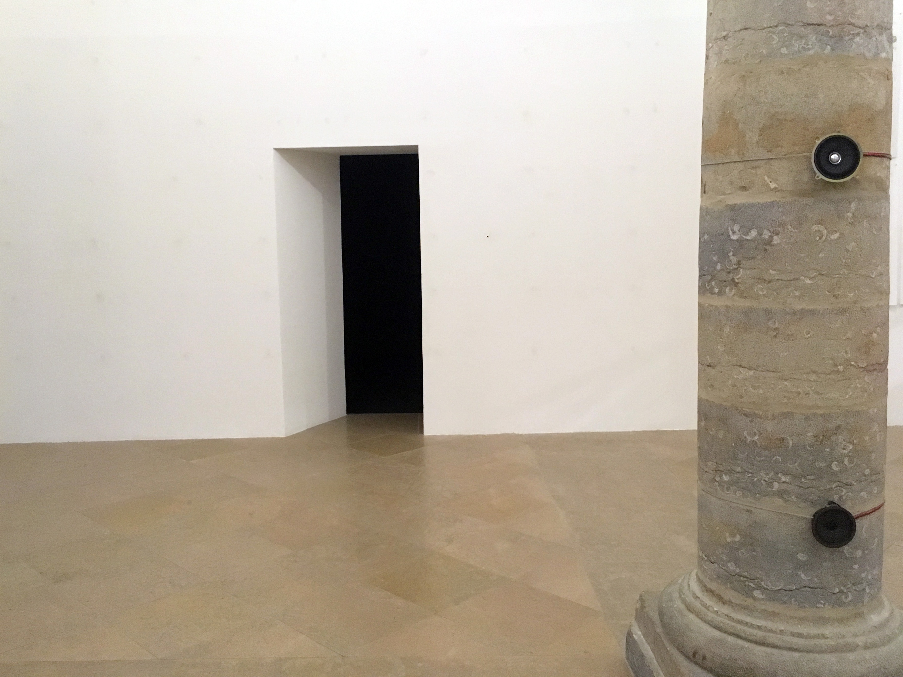
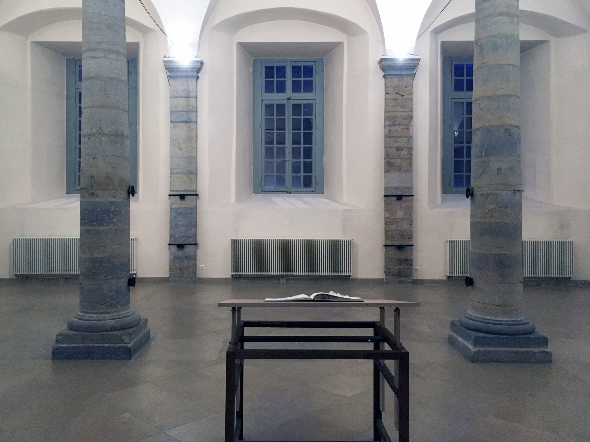
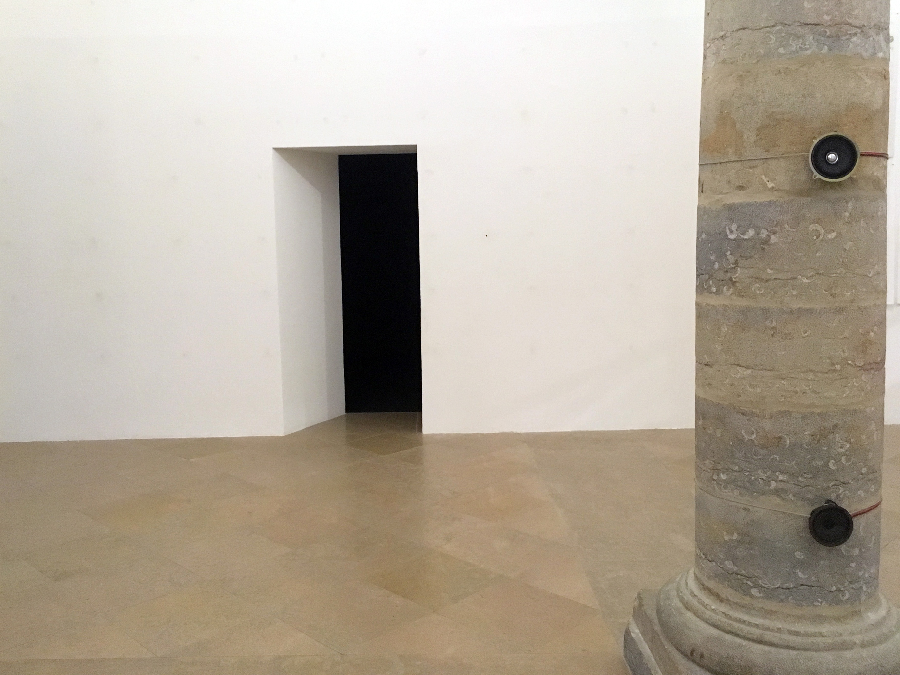

Rien n’aura eu lieu, que le lieu, excepté peut-être une constellation.
[2019]
Interactive audiovisual installation (Multichannel spatialized sound and HD projection) (2019).
The installation is thought for the specific time and space of the exhibition, from reflections about hantology and its link to the materiality of the place, to the resonances, the spectres, the temporalities that haunt him, the rests of voices, of sounds imprisoned in and between the walls.
Fold the map, 6 times maximum, complicate thus the space and leaving outside two visible exteriorities.
12 loudspeakers are then taken inside those metaphoric folds that create the meeting, the overlaying of two opposite points of the space.
6 of them are broadcasting sounds, memories of the place and traces from past exhibitions that are
triggered, or not, depending on the presence or absence, the movements of visitors
inside the exhibition hall.
6 others, arranged according to the axial symmetry of the fold lines, capturing the sound environment of the room,
day and night, during the entire duration of the exhibition, transforming them into points that form a graphic matrix,
an increasingly defined map, showing the invisible, a process of creation that will prove complete at the end of the exhibition, on January 18, 2020 at 6 pm.
Pics:
 

 



 


